Изучение основ операционной системы Linux, освоении работы в командной строке, получении навыков администрирования сервера и написания скриптов на языке bush через прохождение внешнего образовательного курса.
Linux — это свободное семейство операционных систем с открытым кодом на базе ядра Linux. В отличие от Windows, он не требует оплаты, даёт полную свободу настроек, более защищён и работает везде: от серверов и суперкомпьютеров до Android-смартфонов и умных устройств.
Задание 1.1 Формулировка: Как называется этот курс? Пояснение по выбору ответа: Был выбран ответ «Введение в Linux», так как он напрямую соответствует официальному названию проходимого курса.(рис. 1)
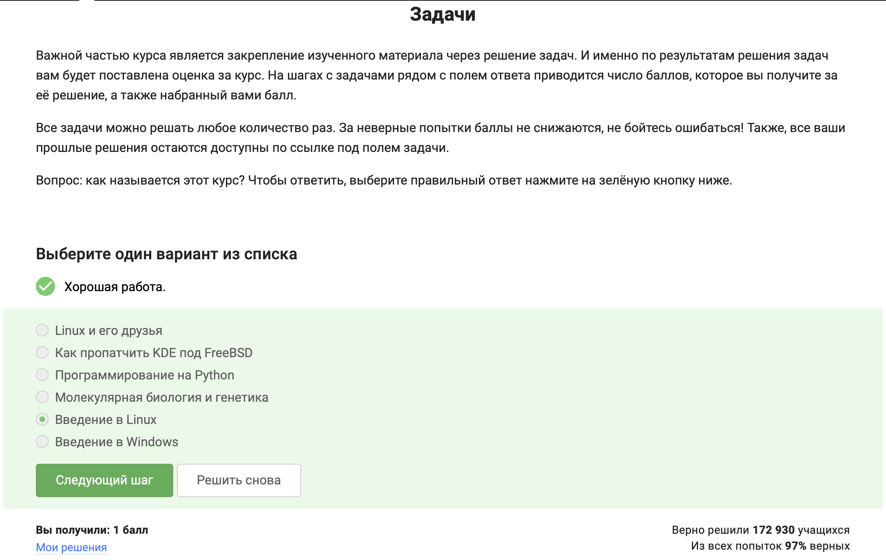
Задание 1.2 Формулировка: Критерии прохождения курса по Linux (отметьте ВСЕ верные утверждения). Пояснение по выбору ответа: Отмечены пункты об отсутствии дедлайнов, необходимости самостоятельной работы и запрете на распространение ответов. Это базовые правила платформы.(рис. 2)
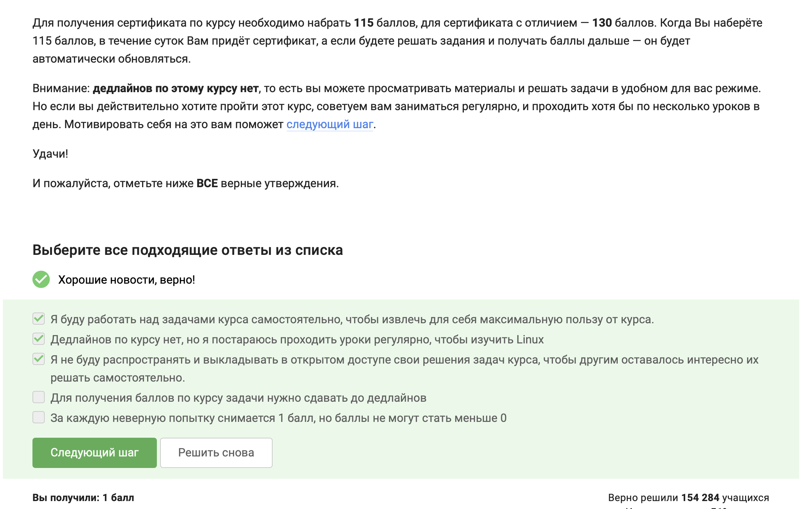
Задание 1.3 Формулировка: Какую операционную систему вы обычно используете? Пояснение по выбору ответа: Выбран вариант Windows/OS X, так как это опросный вопрос без строго неверных вариантов. (рис. 3)
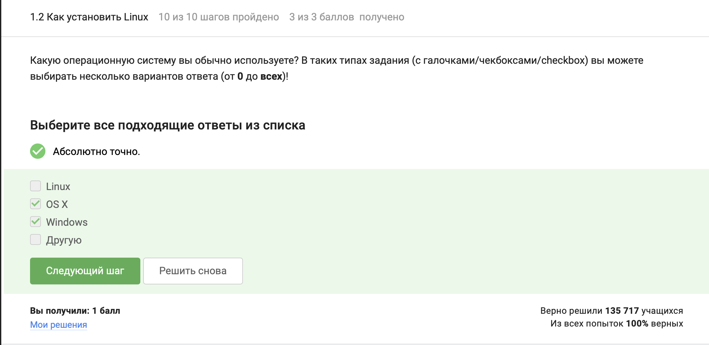
Задание 1.4 Формулировка: Что такое виртуальная машина? Пояснение по выбору ответа: Выбрано определение: «Специальная программа для запуска одной ОС на другой ОС», так как гипервизор эмулирует аппаратное обеспечение.(рис. 4)
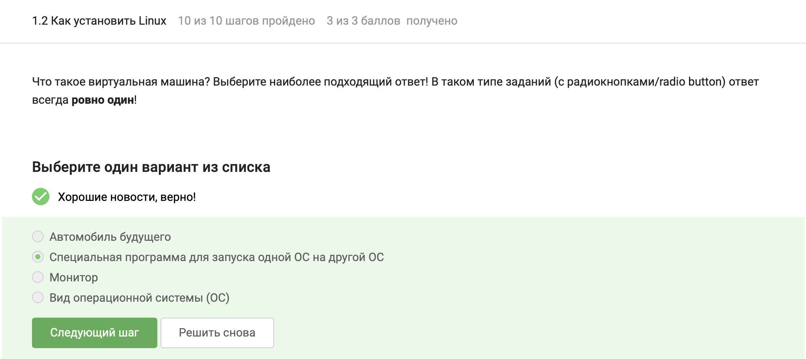
Задание 1.5 Формулировка: Смогли ли вы запустить на своем компьютере Linux? Пояснение по выбору ответа: Выбран вариант «Да», так как окружение было успешно настроено. (рис. 5)
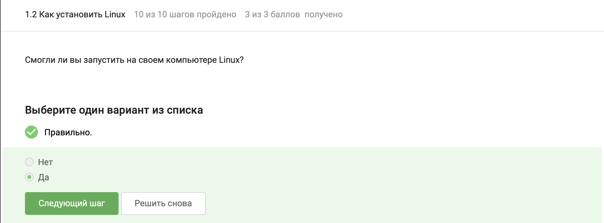
Задание 1.7 Формулировка: Какое расширение имеют установочные пакеты в Linux (Ubuntu)? Пояснение по выбору ответа: Выбрано deb, так как Ubuntu базируется на Debian и использует пакетный менеджер dpkg/apt. (рис. 6)
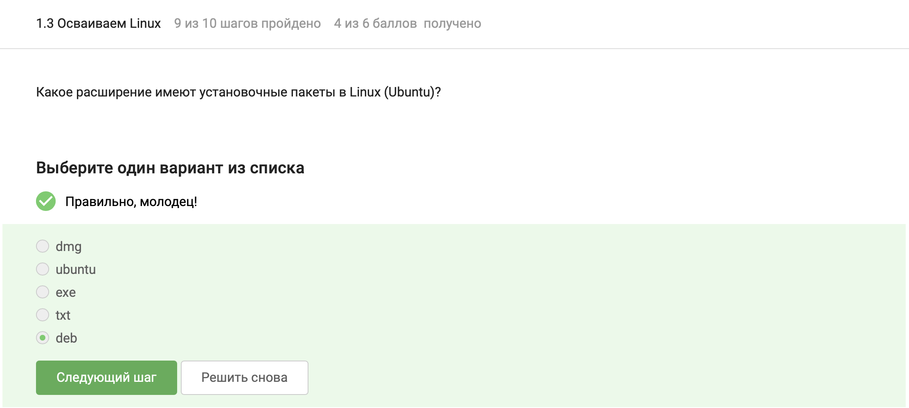
Задание 1.8 Формулировка: Поставьте себе в систему плеер VLC и напишите первую фамилию из вкладки Authors. Пояснение по выполнению: Плеер был установлен командой sudo apt install vlc. В окне “О программе” найдена фамилия Denis-Courmont. (рис. 7)
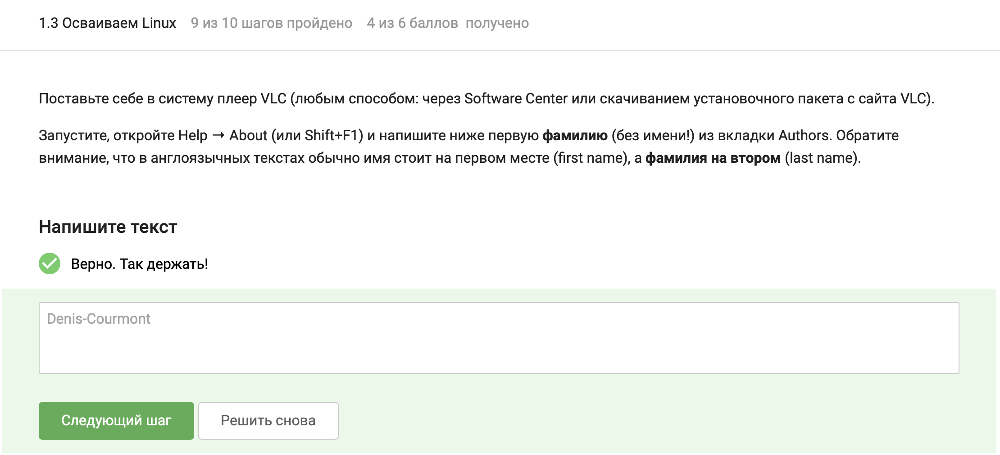
Задание 1.9 Формулировка: Для чего можно использовать приложение Update Manager? Пояснение по выбору ответа: Выбраны пункты: «Для обновления всей системы до новой версии», «Для обновления ссылок в Software Center» и «Для обновления установленных программ», так как это то, для чего можно использовать приложение. (рис. 8)
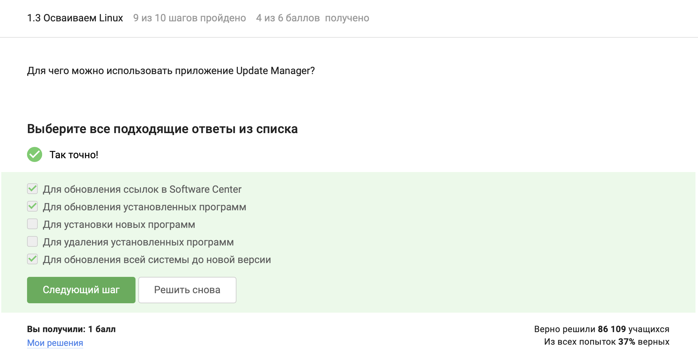
Задание 1.10 Формулировка: Выберите все синонимы для “командной строки”. Пояснение по выбору ответа: Отмечены «Терминал» и «Консоль», являющиеся общепринятыми терминами.(рис. 9)
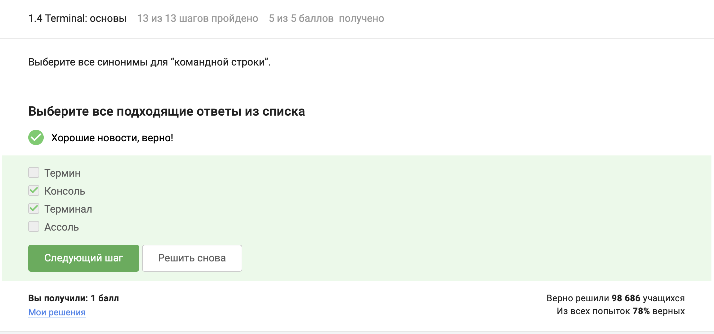
Задание 1.11 Формулировка: Какая команда напечатает в какой директории мы сейчас находимся? Пояснение по выбору ответа: Выбрана утилита “pwd” (print working directory). Она выводит абсолютный путь. (рис. 10)
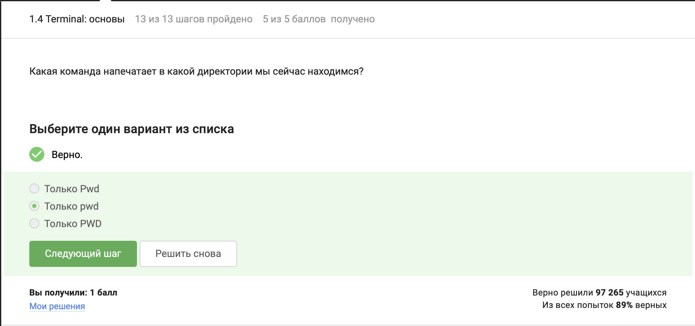
Задание 1.12 Формулировка: Эквиваленты команде ls -A –human-readable -l Пояснение по выбору ответа: Верные эквиваленты Is -almost-all –human-readable /some/directory, Is -Ahl /some/directory, Is -lAh /some/directory так как ключи можно объединять в один блок. (рис. 11)
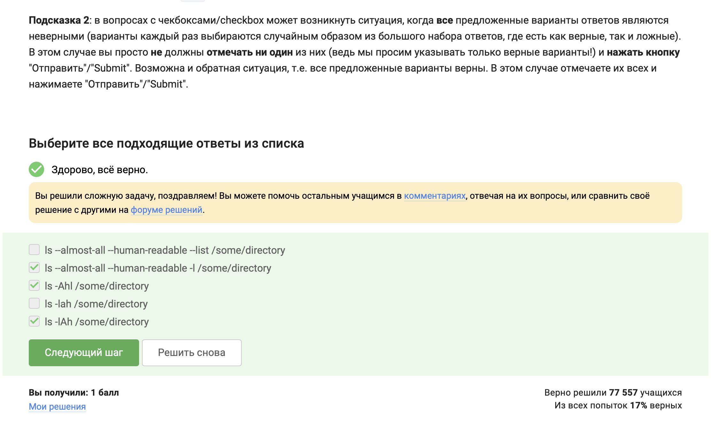
Задание 1.13 Формулировка: Команда для вывода содержимого /home/bi/Downloads из /home/bi/Documents. Пояснение по выбору ответа: Верные относительные пути: ls ../Downloads (на уровень выше) и Is ./../Downloads (от родительской папки).(рис. 12)
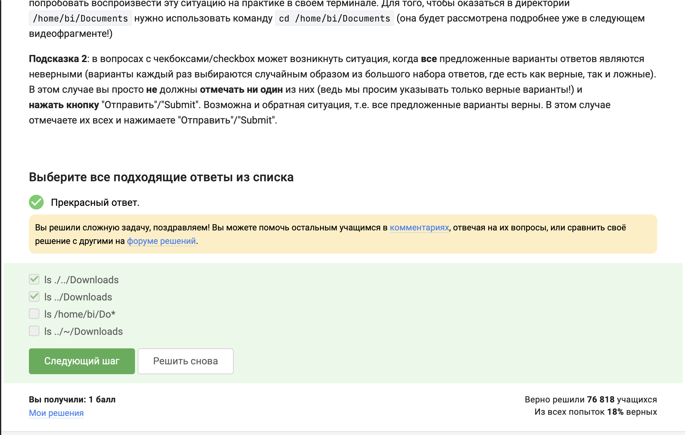
Задание 1.14 Формулировка: Команда для удаления директорий. Пояснение по выбору ответа: Выбрано rm -r, так как ключ -r (recursive) необходим для удаления папок с их содержимым. (рис. 13)
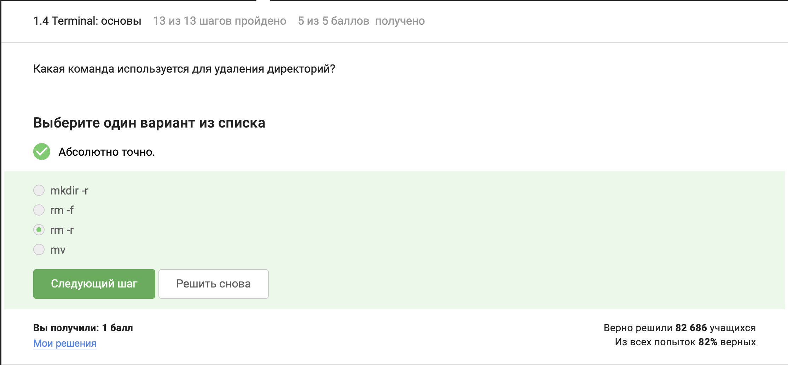
Задание 1.15 Формулировка: Что произойдет при вводе firefox, а затем exit в терминал? Пояснение по выбору ответа: Firefox заблокирует терминал, пока не будет закрыт. Команда exit будет ждать своей очереди. Поэтому “Никто не закроется”. (рис. 14)
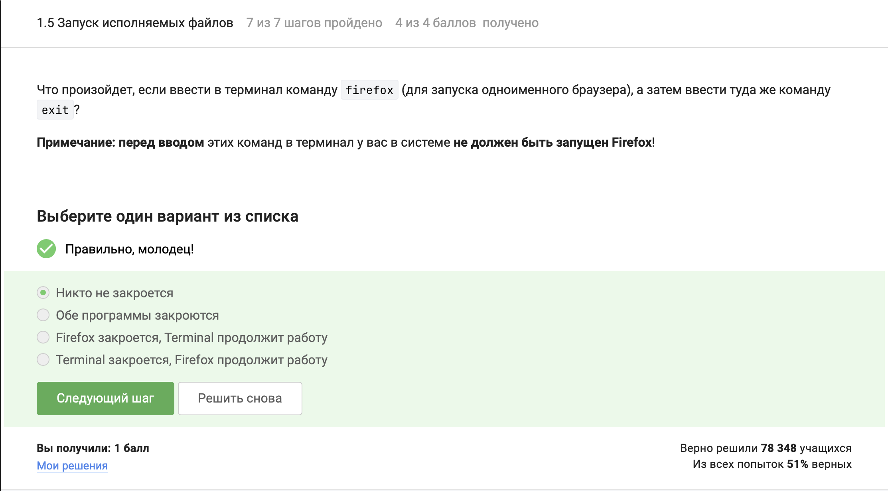
Задание 1.16 Формулировка: Эквивалент запуска программы с &. Пояснение по выбору ответа: Запуск с & отправляет процесс в фон, что эквивалентно приостановке (Ctrl+Z) и команде bg. (рис. 15)
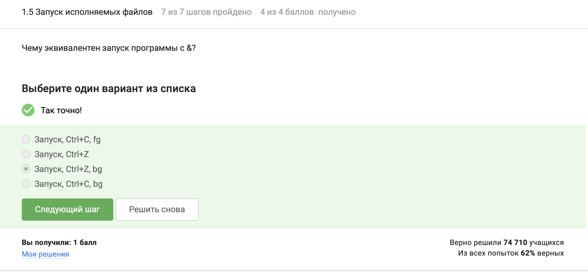
Задание 1.17 Формулировка: Сделайте скачанный файл исполняемым и запустите. Пояснение по выполнению: Выполнена команда chmod +x file, затем скрипт запущен ./file. Полученный вывод вставлен в ответ. (рис. 16)
адание 1.18 Формулировка: Куда по умолчанию выводится поток ошибок? Пояснение по выбору ответа: Standard error (stderr) по умолчанию дублируется в консоль (на экран). (рис. 17)
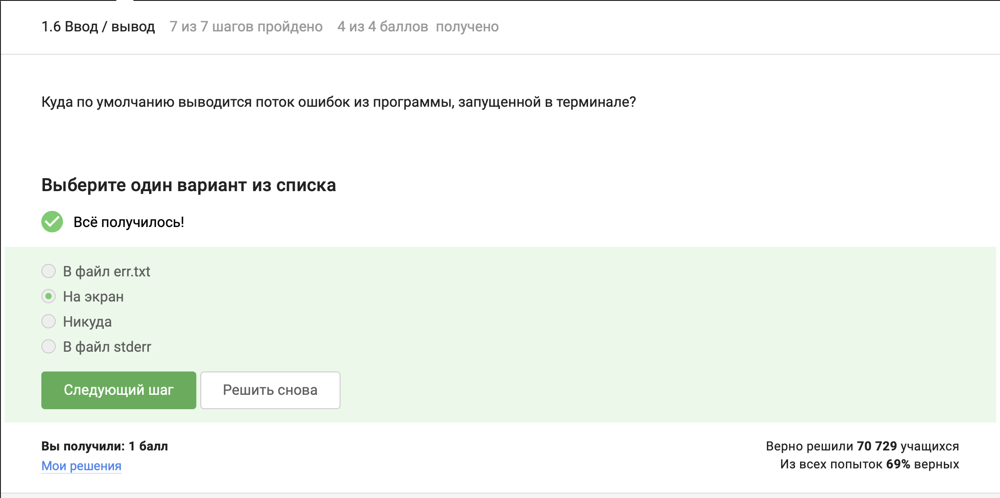
Задание 1.19 Формулировка: Команды для перенаправления потока ошибок в файл. Пояснение по выбору ответа: Выбраны 2> (перезапись) и 2>> (дозапись). Цифра 2 обозначает дескриптор stderr.(рис. 18)
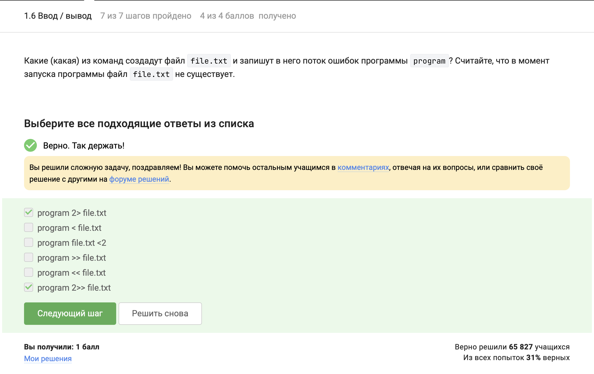
Задание 1.20 Формулировка: Куда деваются сообщения об ошибках в pipe? Пояснение по выбору ответа: Конвейер (|) перенаправляет только stdout. Ошибки продолжают выводиться на экран. (рис. 19)
Задание 1.21 Формулировка: В каком файле окажется картинка при конфликте флагов wget? Пояснение по выбору ответа: Флаг -O переопределяет директорию и имя файла, поэтому картинка сохранится как /home/alex/1.jpg. (рис. 20)
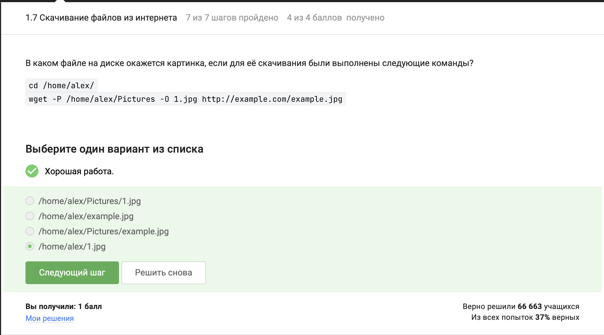
Задание 1.22 Формулировка: Опция wget для отключения вывода сообщений. Пояснение по выбору ответа: Ключ -q или –quiet включает тихий режим.(рис. 21)
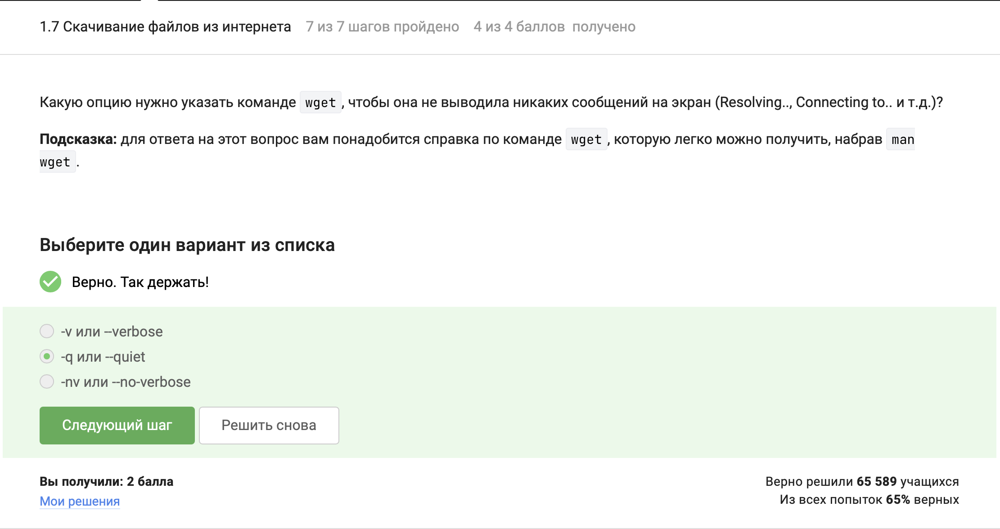
Задание 1.23 Формулировка: Скачивание с ключом -A jpg. Пояснение по выбору ответа: wget скачает все html-страницы для анализа ссылок, а затем удалит их, оставив только jpg. (рис. 22)
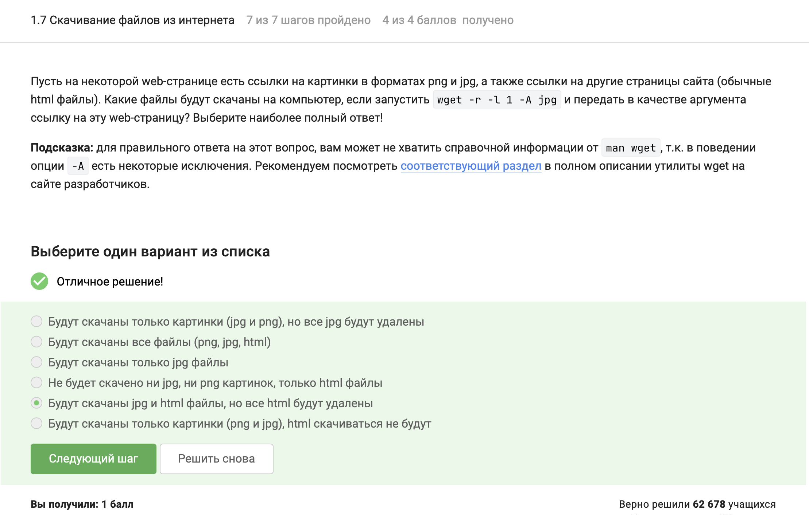
Задание 1.24 Формулировка: Отличие gzip от zip. Пояснение по выбору ответа: Утилита gzip по умолчанию удаляет исходный файл после сжатия, оставляя только архив. (рис. 11)
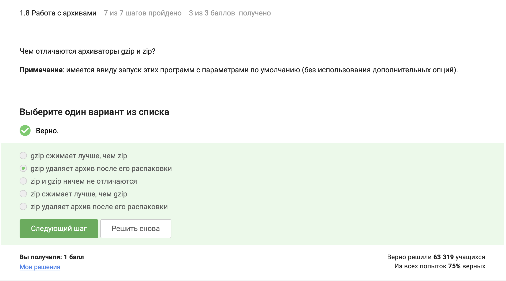
Задание 1.25 Формулировка: Программы для архивации директорий. Пояснение по выбору ответа: Выбраны zip и tar. Утилита gzip работает только с одиночными файлами.(рис. 24)
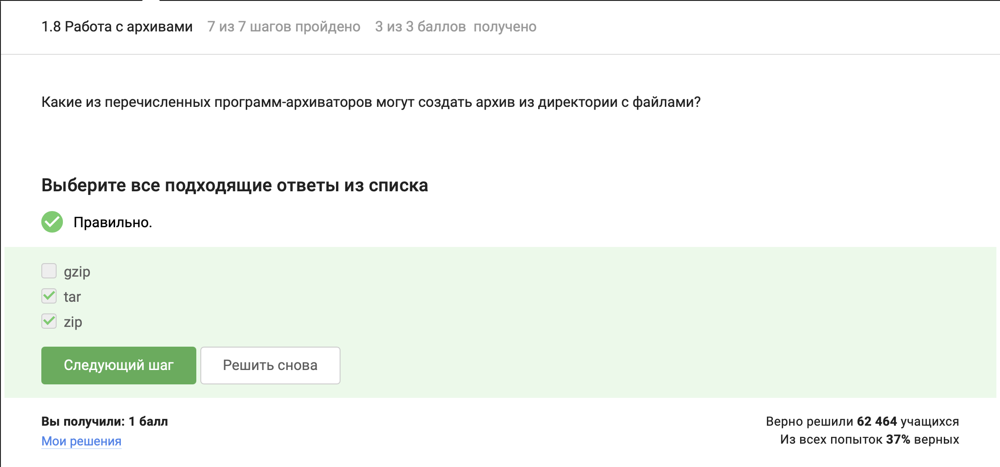
Задание 1.26 Формулировка: Опции tar для архива .tar.bz2. Пояснение по выбору ответа: Ключ -c (create), -j (bzip2 компрессия), -f (указание имени файла). Итого: -cjf. (рис. 13)
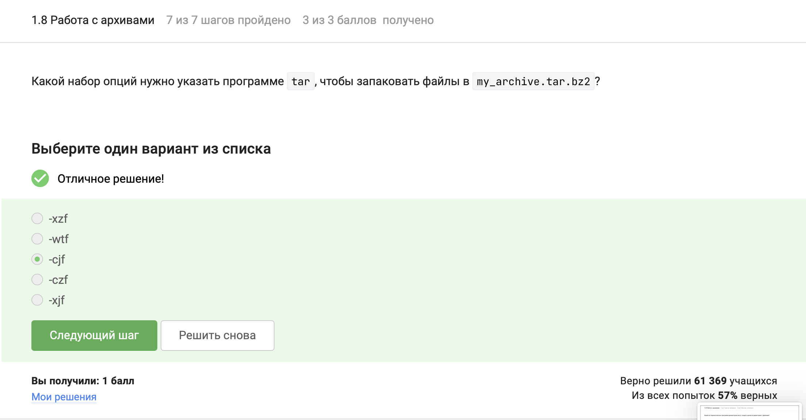
Задание 1.27 Формулировка: Маска find, которая НЕ найдет Alexey.jpeg. Пояснение по выбору ответа: Выбраны .jpg (другое расширение), alexey. (другой регистр) и *.? (ограничение длины расширения). (рис. 26)
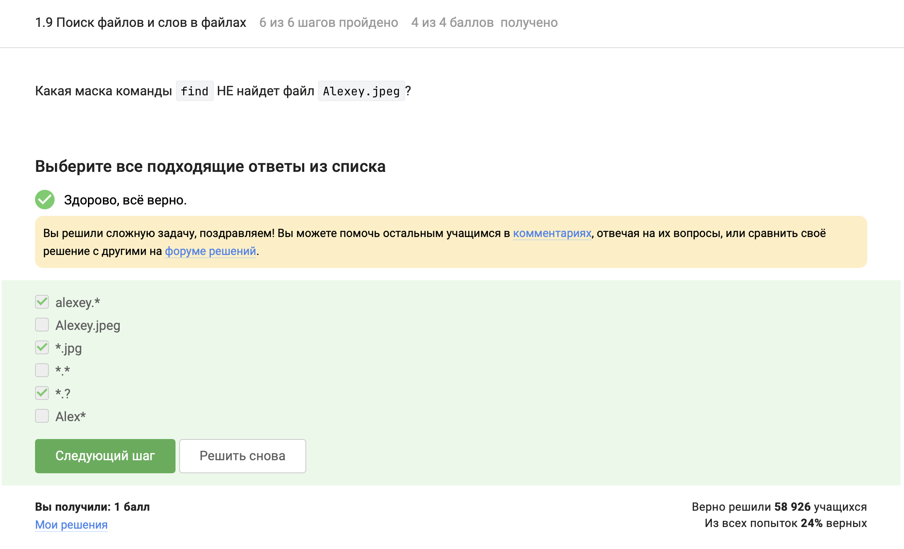
Задание 1.28 Формулировка: Строки, которые выведет grep “world”. Пояснение по выбору ответа: Отмечены все строки, содержащие слово “world” строго в нижнем регистре (grep чувствителен к регистру).(рис. 27)
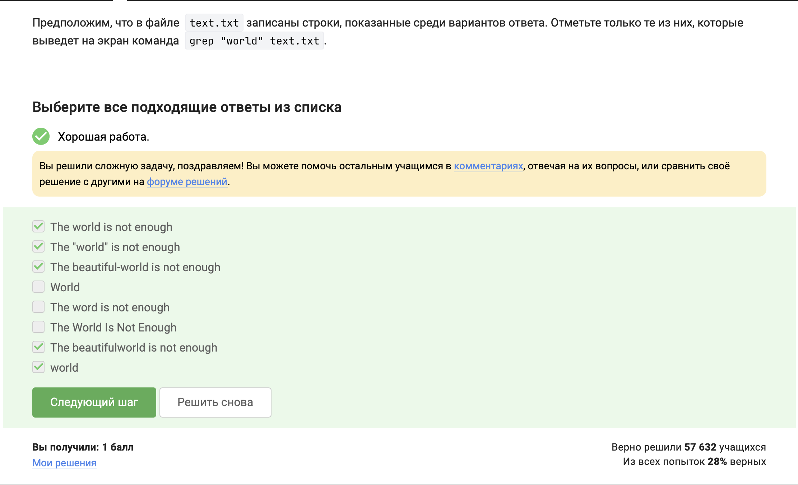
Задание 1.29 Формулировка: Сгенерировать файл со строками из произведений Шекспира, содержащими “love”. Пояснение по выполнению: Задание выполнено в консоли: архив распакован tar -xzf, затем применена команда grep -r “love” . > answer.txt. (рис. 28)
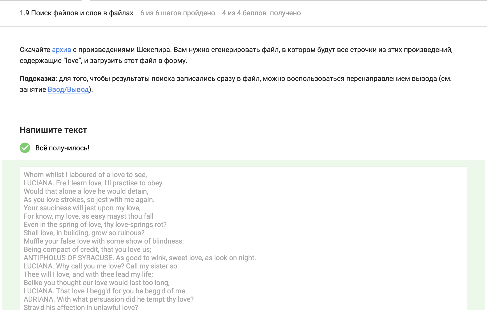
Выполнен 1 этап внешнего учебного курса “Введение в Linux”
{kind=link}